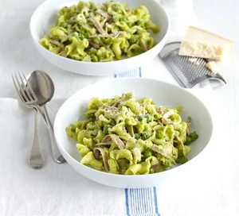

View All Recipes
Tuna Pasta

Tuna Pasta Recipe
Whip up a delicious tuna and lemon pasta in under 25 minutes for a no-fuss midweek meal. This simple storecupboard dish is ideal if you are on a budget. This meal is popular over italy and over the UK.
Total Calories: 180
Ingredients:
- 350g pasta shells
- 200g pack trimmed fine beans, cut into short lengths
- 200g can tuna in oil
- 1 lemon, zested
- 1 heaped tbsp small capers
- generous pinch of chilli flakes
- olive oil, for drizzling
Steps:
- Step 1 Cook the pasta in boiling salted water for 8 mins. Add the beans and cook for a further 3 mins until both the pasta and beans are just tender. Meanwhile, tip the tuna and its oil into a bowl and flake the fish, keeping the pieces quite large. Stir in the lemon zest, capers, chilli and plenty of salt and pepper.
- Step 2: Drain the pasta and beans, return them to the pan and toss with the tuna mixture. Add a little olive oil if you need to moisten everything. Serve the tuna and lemon pasta on its own or with a tomato and onion salad.